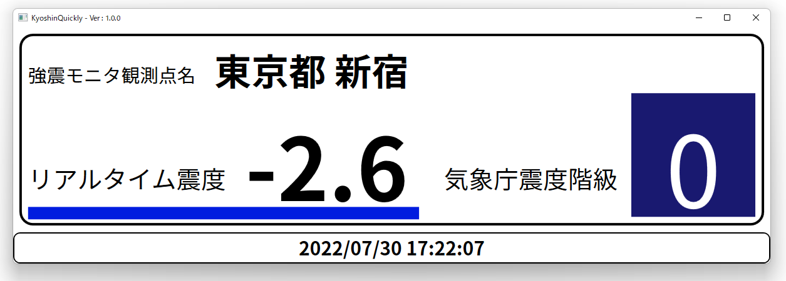

KyoshinQuickly
KyoshinQuicklyは、複数の強震モニタ観測点のリアルタイム震度を分かりやすく表示する、Windows向けソフトウェアです。

特徴 - Features
"複数地点での" 今の震度を分かりやすく表示
強震モニタから今現在の震度を各観測点ごとに取得できます。
取得したデータを"リアルタイム震度"と"気象庁震度階級"の二つで表示します。

カスタマイズ性の高い画面
画面上の文字色や背景色は自由に変更することができ、自分好みの表示にすることができます。

謝辞 - Thanks
API関連
そうし 様 (緊急地震速報 API)
たくや 様 (地震情報・津波情報API)
注意事項 - Caution
予期せぬ動作をしたり、地震発生時など重要な時に正常な動作をしない可能性があります。
不具合を発見された場合は、開発者のTwitterのDMまでお願いします。
禁止事項 - Prohibitions
KyoshinQuicklyの利用にあたり、以下の行為を禁止とします。
・著作権を侵害する行為（再配布・自作発言等）
・逆アセンブル/デコンパイル等のソースコードを解読する行為
現在、公開は開始されていません。
公開開始は、7月31日15時を予定しています。
推奨動作環境
OS : Windows7以上
CPU : 2コア以上のCPU
インターネット : 安定して1Mbps以上の通信ができる環境